日文文書処理
文書の整形
文書の２つの面
文書には、
- 言語的な面
- 物理的な面
の２つがある。
文書の言語的な面とは、それが言語によって表現・構成されていることである。また、文書の物理的な面とは、それが紙に印刷されたりディスプレイに表示されたりして存在するということである。
- 文書の言語的な面
- 表現や構成などの文書のなかみ（内容）
- 文書の物理的な面
- 文字や配列などの文書の見た目（外見）
文書の整形とは
文書を〈わかりやすい〉・〈読みやすい〉ものにするためには、文書の言語的な面だけでなく、文書の物理的な面にも注意しなければならない。文書を〈読みやすい〉ものにするための作業を、整形（文書整形）という。
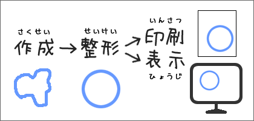
mark-upとWYSIWYG
電子文書の整形には、２つの方法がある。ひとつはmark-up（マークアップ）と呼ばれる方法である。もうひとつは、WYSIWYG（ウィジウィグ／ウィズウィグ）と呼ばれる方法である。
mark-up
mark-up（マークアップ）とは、テキストに特別なマークをつけることで、文書に関する情報を文書に記述する方法をいう（マークアップ言語としてのHTMLについては、「ＨＴＭＬとは？」）。mark-upによる電子文書の整形では、TEX（テフ、テック）を用いる方法が代表的である。
WYSIWYG
WYSIWYGとは、コンピュータのディスプレイに表示された文字の大きさや形を変えると、印刷（プリント）された文字の大きさや形も変わるという方法である。WYSIWYGによる電子文書の整形では、ワードプロセッサword processor（ワープロソフトword processor software）を用いる方法が代表的である。なお、WYSIWYGは、"What You See Is What You Get"（『あなたの見るものがあなたの得られるもの』）の頭文字語で、ディスプレイでの表示のままに、印刷（プリント）することができるという意味である。
電子文書を、印刷して利用する場合、一般的な用途では、ワープロ（WYSIWYG）が使われることが多い。一方、高度な処理や詳細な設定を必要とする場合にはTEXなどのマークアップが使われる。
ワープロソフトとは
文書（テキスト文書）の作成するためのソフトウェアには、エディタtext editorと呼ばれるものがある。一方、文書の作成だけでなく、文書の整形を同時に行なうソフトウェアをワープロソフトword processor softwareという。
- エディタtext editor
- 文書の作成
- ワープロソフトword processor software
- 文書の作成・文書の整形
ワープロソフトとして、現在もっとも普及しているのは、米Microsoft社のMicrosoft Wordである。高価で多くの機能が備わっていることが特徴だが、それらの機能を有効に使いこなすことは難しい。また、Nisus WriterやMellelといった安価で高機能な他言語対応ワープロソフトmultilingual word processorもある。
文書整形での注意点
電子文書をワープロソフトで整形するときには、以下のことに注意する。
書字方向と段組み
日本語には、縦書きと横書きの２種類がある。
電子文書は横書きが多いが、長い文書を印刷して利用する場合には縦書きも用いられる。また、手紙文などでは、縦書きを横書きよりも正式とする場合もあるので注意すること。
電子文書では、１段組みが用いられることが多いが、長い文書では２段組みにした方が読みやすいこともある。
フォントの使い分け
電子文書で画面表示や印刷に使われる文字の形をフォントfont（デジタルフォントdigital font）という（書体ということもある）。
フォントにはさまざまな種類があり、文書整形では、フォントを適切に使い分けることも重要である。
ゴシック体と明朝体
日本語のフォントにもさまざまな種類があるが、ゴシック体のフォントと、明朝体のフォントがよく使われる。ゴシック体のフォントはタイトルや見出し、強調などに用いられ、明朝体のフォントは本文に用いられることが多い。日本語の場合、本文には明朝体フォントを使うのがもっとも読みやすいだろう。
明朝体とゴシック体の違い
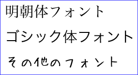
デザインフォントと文書中のフォントの種類
POP体や手書き(風)フォントなどのデザインフォントは読みにくいので避けた方がよい。
POP体フォントの例
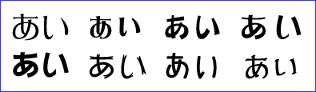
手書き(風)フォントの例
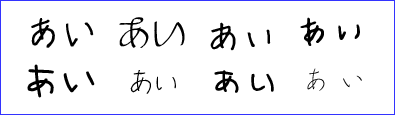
また、ひとつの文書で使うフォントは多くても３種類（たとえば、明朝体、ゴシック体、アルファベットのフォント）くらいにするとよい。ポスターやチラシなどの視覚的効果を狙ったものは別だが、一般的な文書ではシンプルなデザインの方が読みやすくなる。
等幅フォントとプロポーショナルフォント
すべての文字が同じ幅になっているフォントを「等幅フォント」monospace font/typewriter font、文字によって幅に違いがあるフォントを「プロポーショナルフォント」proportional fontという。
等幅フォントとプロポーショナルフォントの例
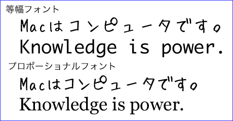
MS Windowsの標準フォントの場合の例：
- 等幅フォント
- ＭＳ 明朝、ＭＳ ゴシック、Arial、Times New Roman
- プロポーショナルフォント
- ＭＳ Ｐ明朝、ＭＳ Ｐゴシック、Courier New、Terminal
アルファベットでは、プロポーショナルフォントを用いるのが普通だが、日本語の場合、プロポーショナルフォントを用いるか等幅フォントを用いるかはあまり大きな問題ではない。日本語は漢字を多く含むからである（漢字はもともとすべての文字が同じ幅である）。
日本語のプロポーショナルフォントでは、アルファベットと算用数字だけがプロポーショナルになっているものも多い。
なお、欧文と和文が混在していて日本語に等幅フォントを用いるときには、欧文にだけプロポーショナルフォントを用いると見やすくなる。
欧文にはプロポーショナルフォントを使うようにする
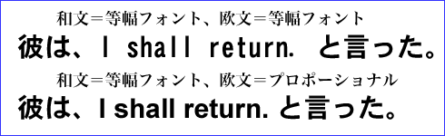
フォントのウェイト
フォントには同じデザイン（ファミリーという）だが太さの違うものがある。この太さの違いをウェイトweightという。
アルファベットのフォントでは、light、medium、bold、日本語のフォントでは細、中、太などの名前で区別される。また、W3やW6のように表示されることもある（数字が大きい方が太い）。明朝体の場合は細か中、ゴシック体では中か太がよく用いられる。
フォントファミリーとウェイトの違いの例
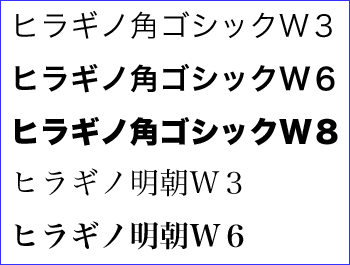
文字サイズの設定・変更
本文の文字サイズは、10ポイント〜12ポイントが普通である。なお、多くの日本語ワープロソフトで10.5ポイントが標準に設定されているのは、日本語タイプライターで本文に用いられていた５号活字に相当するサイズだからである。
文字サイズの設定・変更は、一貫した方法で行なうのがよい。
文字サイズの設定の例：
- タイトル＝18ポイント（明朝体、太）
- サブタイトル＝16ポイント（明朝体、太）
- 署名＝14ポイント（明朝体）
- 本文＝12ポイント（明朝体）
- 見出し＝14ポイント（ゴシック体）
見本：
哈日ブームと新外来語
—新外来語の成立背景について—
鍾 季儒
１.なぜ外来語が必要なのか
文法と音声に比べて、語彙は言語の中で一番変化に応じて変わる部分だと言われている。魏永紅・魏永佳（1996: 51）が「歴史の発展、社会の変化、地域間の差異などの変化はすべて語彙によって反映するようになっている」と述べているように、語彙の変化は色々な分野の変貌を物語っている。
世界諸言語には多かれ少なかれ、その言語における外来語がある。外来語は世界各国の文化交流につき、必ず生じる現象である。（以下略）
文字の装飾・色
太字（ボールド）、斜体（イタリック）、囲み、網掛け、反転などの文字の装飾は、内容を強調する場合などに必要なものだけを使うようにする。
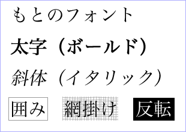
ビジネス文書はコピー（複写）されることが多い。コピーしたとき、網掛け、反転は文字が読みにくくなってしまう。逆に、囲みはコピーしたときに消えてしまうことがある。
また、日本語では、強調したいところをイタリックにする習慣はない。強調したいのならば、下線をつけるか文字を太くすればよい。
ただ、日本語のフォントを太くするときに、ワープロの太字（ボールド）の機能を使うと見た目が汚くなってしまうので、できれば避けた方がよい（文字を太くしたい場合は、同じファミリーでウェイトの大きなフォントを使うようにする）。
細い文字を太字にすると輪郭がぼやけて汚くなる
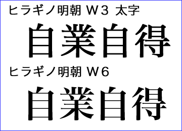
また、特別な意味がない場合、文字の色は黒にする。
字間・行間の設定
字間や行間が詰まっていたり、逆に離れすぎていると読みにくくなる。
フォントは、そのまま並べたとき（字間ゼロ）にもきれいに見えるように工夫されている。そのため無理に字間の設定を変更する必要はない。
行間は、文字サイズの50％〜75％の大きさに設定するのが普通である。
余白（マージン）の設定・変更
余白は文書の読みやすさに大きく影響する。余白が少なく、文字のある部分が大きすぎるものは読みづらいので注意する。
Ａ４サイズでの余白の設定の例：
- 上：20mm、右：20mm、下：25mm、左：22mm
- 上：25mm、右：20mm、下：30mm、左：20mm
文書の校正
文書整形では、入力された文字の間違いや不統一を直すことも重要である。
記号や表記の統一
「。」と「．」や「、」と「，」などが混ざっていたら、どちらかに統一する。
「コンピュータ」と「コンピューター」や、「もっとも」と「最も」など表記が不統一ならばどちらかに統一する。
さらに詳しいことは【→文書の校正】を参照
誤字・脱字の訂正
誤字があれば訂正する
- ×「〜と考えr。」→○「〜と考える。」
- ×「〜と見なされれる。」→○「〜と見なされる」
脱字も訂正する。
- ×「〜と思ます。」→○「〜と思います。」
- ×「アイスピクで」→○「アイスピックで」
同音異義語の間違いも訂正する。
- ×「内臓のハードディスク」→○「内蔵のハードディスク」
- ×「事故商会しま〜す。」→○「自己紹介しま〜す。」
さらに詳しいことは【→文書の校正】を参照
不適切な文字の変換
いわゆる「半角カナ」などはできるだけ使わない。
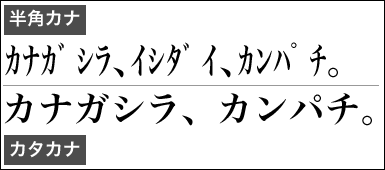
段落の先頭などで、スペースでの文字揃えをしない。文字揃えには、インデントとタブを使うようにする。
算用数字
電子文書で、漢字や仮名などのように縦と横が同じ大きさの文字を２バイト文字2-byte character、アルファベットのように横が縦の半分の大きさになる文字を１バイト文字1-byte characterという。日本語では、２バイト文字を全角文字、１バイト文字を半角文字という。
２バイト文字（１２３４）
1-byte character(1234)
算用数字（1,2,3など）では、２桁以上の場合に１バイト文字（半角文字）を用い、１桁では２バイト文字（全角文字）を用いるのが普通である。
○ １回、２回、３回 ／ ○ 西暦2006年11月
× 1回、2回、3回 ／ × 西暦２００６年１１月
行末の禁則処理
「、」や「。」などの行頭にあってはいけない記号を適切に処理することを禁則処理（行末禁則処理）という。
禁則処理には、処理の対象となる文字を行（前の行または同じ行）の末尾に表示する「ぶら下がり（ぶら下げ）」と、対象となる文字（または対象となる文字の前の文字）を次の行に先頭に送る「追い出し」とがある。
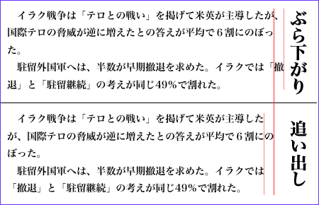
練習
ワープロソフトで
次の
文書を
整形してみよう。
育達商業技術學院應用日語系の紹介
地元密着の人材育成
応用日本語学科は、苗栗地区唯一の日本語学科として、２０００年に設立されました。応用日本語学科では、「様々な分野に日本語の応用能力を持った人材の育成」を目指しており、「聴く、話す、読む、書く、訳す」の５つの能力に基づいて、様々な科目が設けられいます。多様な専門能力を身につけ、卒業後に研究や翻訳、通訳、同時通訳や国際貿易、観光などの領域に専門を生かす力を持つよう生徒を育てるのがわたしたちの希望です。
優良な教師陣
応用日本語学科の専任教員は７名の外国人教師を含む合計20名で，助教授以上の資格を持つ教師の比率は40％を超えています．教師は，毎年多くの論文発表、研究発表を行なっています．また，国内の著名な出版社や旅行業者、そごう百貨店、空港免税店などと連携し，学生に実習の機会を与えています．応用日本語学科では，毎年，定期的に国内や国外の学者を招いて公園や研究発表を行なっっています．
充実した専門教室
応用日本語学科には、専用のＬＬ教室が3室あり、最大172人が言語学習機を使うことができます。日本語自学教室には、40台の日本語システム（ウインドウズXP）のコンピュータと１５00枚以上の日本語勉強用ディスクがあり、学生が日本語を自習することができます。応用日本語学科図書室には、1000冊以上の日本語専門書と200冊以上の日本語マンガを蔵書しています。専用の日本文化教室は、台湾でも唯一の設備です。日本文化教室では、週の水曜日に茶道の稽古が行なわれています。ここ2年続けて行なわれている本学科の対外茶道公演は、台湾でも特に有名である。
日本の姉妹校
応用日本語学科は、日本の私大（城西国際大学、吉備国際大学など）と姉妹校関係を締結して、学術交流を行なっています。
短期研修と交換留学
2005年８月２０日には、黄其正主任の引率で、日本語能力試験２級以上の学生（３年生）23名が吉備国際大学で２週間の海外研修を行ないました。ホームステイを通じて日本の生活を体験し、日本語を学びました。2005年９月には、城西国際大学に１年間の交換留学生を派遣しました。留学した２名の学生は、いずれも日本語能力試験１級の資格を持っています。
忘年会・桜祭り
応用日本語学科では、年末に紅白歌合戦、３月に桜祭りのイベントーを行なっています。
家族のような関係
応用日本語学科の最大の財産は、家族のようなまとまりがあることです。これは他大学の日本語学科にはないものだと、教育部学科評価で審査委員の先生方にも認められました。